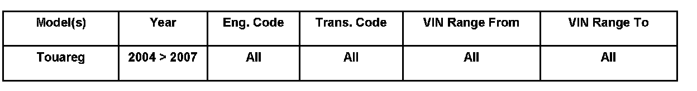
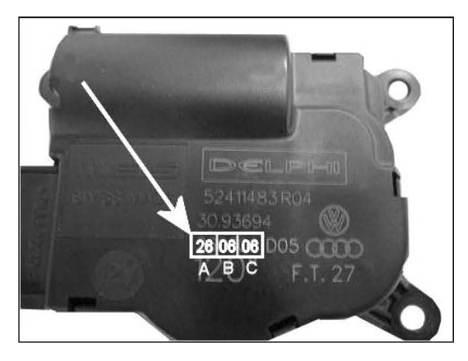
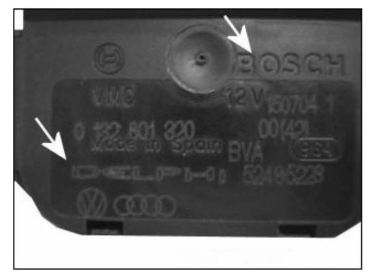
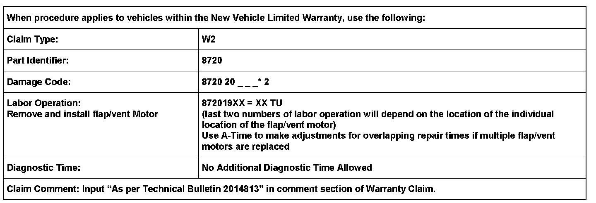
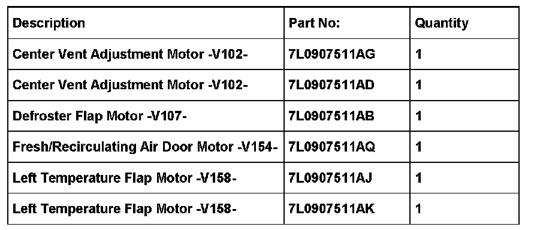
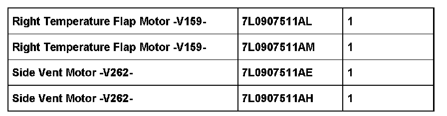

A/C - Ticking Noise From Center of Dash
87 07 06Apr. 24, 2007
2014813

Affected Vehicles
Condition
HVAC, Ticking Noise Behind Dash Panel or Center Console
Only when Climatronic AUTO mode is selected, a ticking noise behind dash panel or center console is heard. The noise is most noticeable with low radio volume and low fan speed.
Technical Background
Ticking noise may be caused from excessive free play within the mechanical portion of the flap/vent motor for the Climatronic operation.
Tip:
ONLY Delphi manufactured flap/vent motors are affected.
Production Solution
Not applicable.
Service
Verification
^ Select Climatronic AUTO mode.
^ Wait until AUTO mode adjust to desired temperature.
Allow Climatronic to make adjustments reguarding air discharge outlets and temperature via the flap/vent motors.
^ Verify ticking noise behind dash panel or center console.
^ Locate which flap/vent motor(s) is/are causing the ticking noise.
Tip:
Movement of flap/vent motor(s) can be initialized by small adjustments to the temperature settings in AUTO mode.
The temperature change causes the flap/vent motors to make slight adjustments. This is the best time to confirm the ticking noise.
Tip:
Monitoring the flap/vent motor(s) can be read with the VAS 5051/5052 scan tool.
Selecting 011- Measured values, Climatronic Control Module -J255-, aids in diagnosing the flap/vent motor(s) movement.
Procedure
Once the ticking noise and location is verified:
^ Replace only the flap/vent motor causing the ticking noise. See Required Parts and Tools.
^ Replace with a flap/vent motor produced after 100906 (September 10, 2006). See Flap/Vent Motor Identification below.
^ See Repair Manual, Heating, Ventilation & Air Conditioning, 87 Air conditioner.
^ Perform Basic Setting of flap/vent motors once repair is complete. See Repair Manual, Heating, Ventilation & Air Conditioning, 87 Air conditioner.
Flap/vent Motor Identification

The -arrow- highlights the following manufacturing information:
A = Production Day
B = Production Month
C = Production Year
Production date on this flap.vent motor is 260606 (June 26, 2006).
Tip:

BOSCH/Delphi -arrows- manufactured flap/vent motors and not affected.
DO NOT replace flap/vent motors manufactured by BOSCH/Delphi.
Warranty

*Code per warranty vendor code policy.


Required Parts and Tools
Tip:
Part number(s) are for reference only. Always see Parts Dept. for the latest part(s) information.
Additional Information
All part and service references provided in ,this Technical Bulletin are subject to change and/or removal. Always check with your Parts Dept,. and Repair Manuals for the latest information.